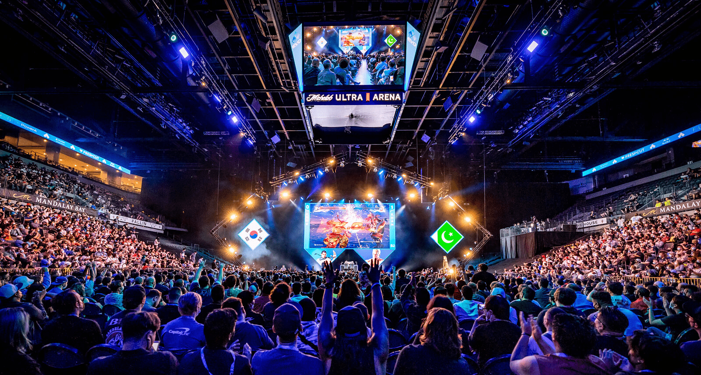

In this simple primer, I am going to introduce you to the fundamentals
of 2D fighting games so that you can start your own
journey to become a world warrior.
Disclaimer: This is not meant to be a comprehensive guide, but rather an introduction to the ideas you'll
want to learn, study, and train to master along the way.
Note: this page is still under construction for mobile devices and being optimized for all screen resolutions
Your first steps
So, you've watched the famous evo moment #37 online
recently, or maybe one of the latest Street Fighter 6
trailers piqued your interest.
Perhaps you saw Street Fighter 5 or Guilty Gear Strive for sale on Steam and snagged it, just to find
yourself getting beat up in ranked matches online.
Whatever the case may be, let's get you on the path.
Next Level Arcade, Brooklyn NY

Pictured: EVO 2022 tournament
Investment
Manage
Before we get into the game,
I think the best place to start
any new undertaking is with yourself.
It's important to manage your expectations
before learning something new.
Your
Do you want to mess around and have fun playing randomly?
Do you want to climb the ladder online?
Do you want to travel and compete in or win tournaments?
There is no wrong answer to this question.
Expectations!
Eric Clapton didn't become a guitar legend by accident.
He practiced 12-15 hours a day growing up.
If your goals are not to improve and win,
you don't need to master these concepts.
Investing MORE time and effort rewards MORE fun and satisfaction.
However, you may have other priorities
besides winning at fighting games, and that's okay.
Getting a grip on things
People use many different controllers to play fighting games.
Controllers, arcade sticks, hitboxes, mixboxes, bat top sticks, crossup hitboxes, custom controllers,
using a racing wheel with buttons on it. There are many
controllers
to consider when playing fighting games,
and many may argue that certain controllers give you an extra advantage.
With that out of the way, I want you to forget about what I just said.
"Real fighting game players use arcade sticks!" is an outdated legacy myth.
Most people saying that grew up playing in arcades, on arcade cabinets, which is what modern sticks you plug in
to your console are
modeled after.
Furthermore, arcade sticks were a way to cope with bad controllers in days gone by like the Xbox 360
controller. What a nightmare that pad was.
Sticks are, admittedly, a very nice novelty item, they are very customizable, and there are a large variety of
styles and brands.
However, you most certainly don't need one to do good or win.
At the end of the day, use what you enjoy using and what makes you feel comfortable.
Technology has come a long way in making every controller choice a good one.
Execution
Execution here is defined as how well you can execute inputs on your controller or stick,
not so much death by guillotine (unless you're a Mortal Kombat player...)
Being able to manipulate your character exactly how you want, especially reflexively is not an easy thing
to do.
If you need to think about every individual word you are saying in a speech or conversation, you're already
behind.
Much like learning motor skills as a newborn, this is not learned overnight.
Learning a character
I heavily recommend all new players sticking to one character
and getting familiar with all their basic and special attacks.
If you keep changing characters while learning, it would be as if
you were exchanging your legs every couple of days while learning to walk.
That is to say, you should fully learn to ride a bicycle,
before moving on to the motorcycle.
...
I further recommend most people try and start off with the main character
or protagonist to learn how the game fundamentally works.
However, I also have come to learn while teaching over the years that
the key for some people is playing the character you like most,
even at the beginning. If you enjoy what you're doing,
you'll want to come back and do it again, because you're having fun,
not doing chores. Your mileage WILL vary, find what works for you!
Numpad Notation
Try pressing your numpad keys while reading to get familiar with the inputs.
Please take some time to examine the image to the left carefully.
This the most commonly agreed-upon notation people use to talk about 2D fighting game inputs.
Let's use Ryu's list of commands above for reference, using numpad notation to talk about his
moves.
I am going to assume you are in the first player position - on the left, facing right - and holding your
thumb or stick at neutral (5).
For Ryu's hadoken (fireball), you would move your controller or stick in a quarter circle forward, or
2-3-6+Punch.
To do his shoryuken (dragon punch), you'll want to move your controller/stick first to 6, down to 2, and
then
slightly
forward to 3, or 6-2-3+Punch.
For tatsumaki senpukyaku (hurricane kick) you'll want to do the opposite of a hadoken, quarter
circle
back, or 2-1-4+Kick.
More complex inputs can come later, it's good to get those three down first. Make sure you practice on
both sides of the screen.
Hitboxes
Much like learning about the code that's going on behind the scenes to make websites run,
there's quite a bit going on under the hood when you start to break down fighting games to understand what's
happening.
What the player and audience see on the screen are a couple of characters fighting and doing cool moves.
It may LOOK like your character is punching above or in front of them, but in reality they're manipulating a
box or boxes attached to their body.
Let's examine one of Ryu's hitboxes below:
The white hitbox represents Ryu's own hitbox, where you can hurt the
character.
Notice that while Ryu is doing his kick attack, there is still a white hitbox on his leg that can be
hurt.
This means he can still be hit while he is attacking, the hurtbox on his leg is just moving with the attack.
The red hitbox represents what is actually happening when Ryu tries to kick
his opponent.
If the red hitbox of your attacking move overlaps your opponent's white hitbox, it will make
"contact".
This interaction is at the core of what fighting games are: an exchange of hitboxes and hurtboxes.
There are many different kinds of hitboxes:
strike, high, overhead, low, and grab.
The scope of these go beyond this guide, but let's examine one other kind of hitbox:
the projectile.
Rather than being part of a character's body, a projectile is, you guessed it, shot or fired by a
character.
Although you can see it takes a moment to start up and get going, what's unique is that it will keep
traveling with no hurtbox.
This means that you can act independently of your projectile after you've finished firing it. It gives you
an advantage in controlling space.
One last thing to consider is that projectiles can clash with eachother.
This may result in what you may have heard in the past as "fireball wars," or a struggle between two players
to control space.
Frame Data
If hitboxes are the engines behind what makes fighting games run, then frame data is like the battery and
alternator.
It's another very important aspect behind what's happening under the hood of your fighting game.
Most, if not all modern fighting games "run" or "process" at 60 frames per second.
Therefore, one frame is equal to 1/60 of a second.
If Ryu's jab 'came out' in 3 frames,
that means it only takes 3/60 of a second to be active.
Let's take a moment to think about this:
Do you think a big windup knockout punch has the same effect as a jab
or leg kick?
Much like in real life, attacks in fighting games are the same:
Varying amounts of time to build up or start up
Different effects when they connect or get blocked
Taking time to recover from recoil or following through
You can miss or whiff your attack, and still have to recover
The frames of any attack can be broken down into basic 3 parts:
Startup frames: your attack is not active yet, you're still winding up.
(Faster attacks have less startup.)
Active frames: your punch, kick, or other attack is out,
and the red hitbox is "active" and threatening.
Recovery frames: you've either hit or missed your attack,
and you have to spend time recovering based on how heavy it was.
Understanding this, even just fundamentally, is essential to understanding risk
vs reward!
Let's examine the risk vs. reward a little more closely:
Every attack has its own frame data, and certain attacks are safer than others.
Yes, massive wind-up punches or kicks look cool and are satisfying to land,
but they are not a safe option to rely on.
This is why the jab is like the swiss army knife of real fighting.
If an attack is "plus on hit," (most attacks are) that means you can start moving or attacking
after your recovery frames are over, while your opponent is stuck
in X amount of frames of being hit (see right).
If an attack is "plus on block," you can start moving or attacking
after your recovery is over, but your opponent is still stuck in X amount of frames of block.
Likewise, however, if an attack of yours is negative on block, that means the opponent will recover
from the blockstun you inflict before you finish recovering from whatever attack you did.
This essentially means you "lose your turn" because they can act before you can.
If an attack is very negative on block (they can act long before you recover),
you could find yourself getting punished, because they recovered from blocking your high risk attack!
This means you can't block before they can retaliate, since you're still stuck in a bunch of recovery frames.
If you're going to commit to a high-risk, high-reward attack, make sure it's going to connect and hit!
See those empty white frames after recovering on top?
This is where you decide how to press your advantage!
Will you walk up and throw? Fake a throw? Do another attack?
I highly recommend watching this short and sweet 5 minute video before you move on:
Bonus: if you cancel the active frames of a normal attack with a special attack like hadoken (fireball),
before the enemy's hitstun (see above pic) ends, what do you think will happen? If you guessed "Wait, that's what a combo actually is!" you'd be right.
Wrapping things up
The first and final obstacle to winning and improving is going to be yourself and your own mind.
As with any other meaningful venture or undertaking, you will find yourself standing in your own way.
The best way to overcome this is by watching recordings of the matches you play or compete in.
Have you ever felt uncomfortable after hearing your own voice from recorded dialogue or an answering machine?
Regardless of your prior confidence, a realization and sudden burst of self-awareness like this is a wake up call.
You may think you were playing your best in that one match, but will likely think otherwise when you watch it later.
It is good to do this regularly, much like checking in to see your weight for gains or losses, it is honest feedback.
Enter: replays. You gotta go back and "watch the footage," as they say.
For example, while you're reviewing a saved replay
from one of your matches, you might remember saying:
"I swear I did a dragon punch in round 2 that one time he jumped at me!"
only to watch it back and say "...oh wait no i made an input error after all..."
In many modern fighting games, you can toggle controller inputs during replays.
Doing so, you may realize: "wow this guy's inputs I was fighting are super clean!"
or perhaps, "dang this guy was mashing buttons like crazy the whole time..."
A big thing to keep an eye out for is repeat mistakes or patterns.
Maybe you're not pressing the advantage hard enough when you are in an advantage state,
or maybe you keep getting stuffed when you try to force your turn back in disadvantage.
Lastly, it's important to watch other player's replays, not just your own.
There is nothing wrong with copying things from players better than you.
I recommend watching higher level matches, both online and tournament.
It's a good starting point, and honestly, downright entertaining the more you learn.
This is what the screen to watch saved replays looks like in SF4.
Final Thoughts
At the end of the day, fighting games are a journey
with highs and lows, sorrow and joy, anger and salt.
You have the opportunity to travel and meet other warriors
who are also on the path to grow and improve or seek glory.
David Sirlin, author of Playing To Win, sums it up well:
"So do all the lessons of winning at games apply to real life? No, they do not.
But only a fool would walk away from competitive games
without learning a wealth of life lessons.
Games require training, practice, and discipline.
Having a love for what you’re doing really does help you.
Games teach you to remain calm under the most dire of circumstances,
and to never give up until your very last breath of life is spent.
They teach you to learn from your mistakes, rather than shift the blame to others,
because that is the only real way to improve.
They teach that continuous self-improvement over time is the only way to survive."
Supplemental resources:
New Challenger Discord: https://discord.gg/newchallenger
Great community with a ton of resources for beginners,
coaching, community tournaments, and helpful people.
The Fighting Game Glossary: https://glossary.infil.net/
Glossary made by a top player with all the jargon
you may encounter in the Fighting Game Community(FGC).
And lastly, me! Feel free to click my logo at the top left of the page and add me on steam if you need help or want to play.
Thanks for reading and best of luck on your own journey.